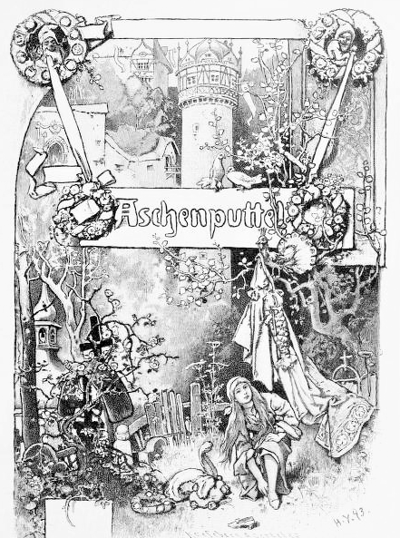
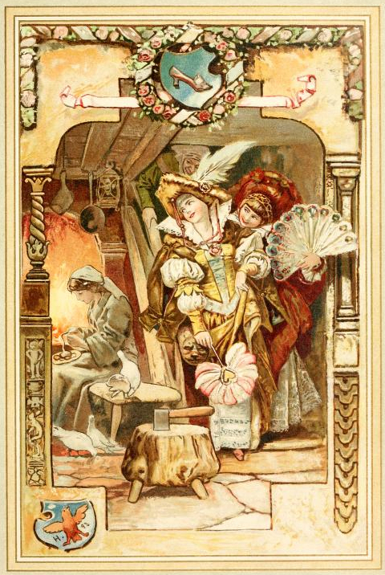
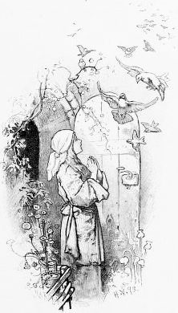
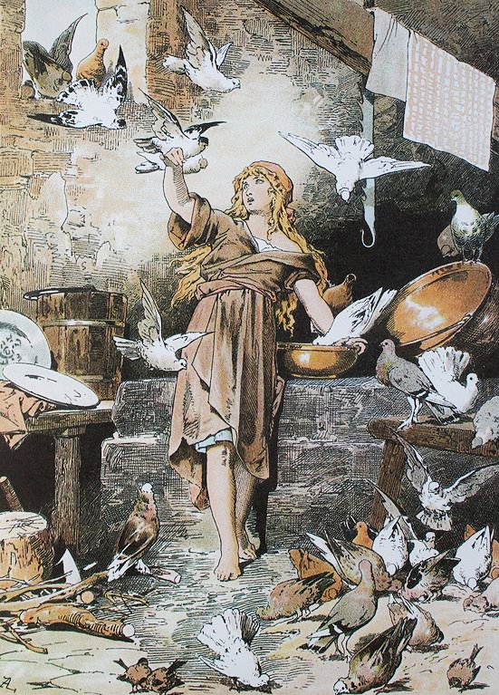
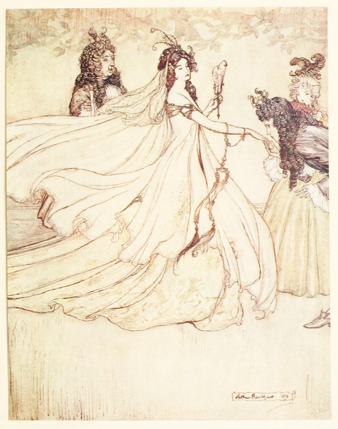
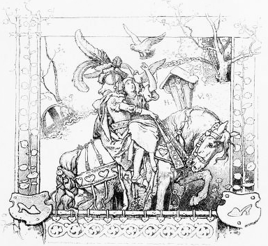

だんなさんがお金もちの、ある女のひとがいました。その女のひとは、びょうきでねこんでいました。もうながくはない、と女のひとはおもって、じぶんのうんだ、たったひとりのむすめを、まくらもとによんで、こういいました。
「いつもおもいやりのある子でいるんですよ。わたしはおそらの上から、あなたのことを、ずっと見まもっていますからね。」
まもなく、女のひとはめをとじて、いきをひきとりました。にわに、おはかがつくられました。このおさない少女は、くる日もくる日もおはかへ行き、なみだをながしました。そして、お母さんのいうとおりに、いつでも、だれにでもしんせつでいました。
やがてゆきがふり、あたりいちめんまっ白になって、おはかも銀いろにおけしょうをしました。でも、もうすぐ、はるがやってくるというころに、おひさまのひかりで、みんなとけてしまいました。ちょうどそんなときでした、お父さんはべつの女のひとと、けっこんしてしまったのです。この女のひとは、じぶんのむすめをふたり、いえにつれてきました。さんにんとも、みためはとてもきれいでしたが、こころはまっ黒だったのです。
かわいそうに、少女にとっては、つらい日々のはじまりだったのです。
「このやくたたず！ こんなところで、なにやってるの！ はたらかざるもの、食うべからず、っていうじゃないの。あんたなんか、皿あらいくらいがおにあいよ！」
といって、少女のドレスをみんなとりあげたあげく、ぼろぼろになった灰色のワンピースをおしつけました。少女はわらわれて、しかたなくだいどころに行くのでした。
まっていたのは、つらいしごとのれんぞくでした。おひさまが顔を出すまえにめをさまして、水くみ、かまどのたきつけ、ごはんづくり、皿あらい。それだけではありませんでした。ふたりの姉は、少女をいろいろいじめたあげく、わらいものにしました。

ひがくれると、少女はへとへとになってしまいます。けれども、ベッドもありませんから、かまどのあるへやへいって、灰にまみれながら、からだをよこにするしかありませんでした。ですから、少女はいつも灰だらけで、よごれていました。そこで、少女は『灰かぶり』といういみの、『アッシェンプッテル』という名まえでよばれました。
ある日のこと、お父さんがおまつりに行くことになりました。まず、今のおくさんのむすめたちに、なにがほしい、とききました。すると、上の姉がこういいました。
「きれいなドレスがいいわ。」
いっぽう、下の姉はこういいました。
「しんじゅと、ほうせきがたくさんほしい。」
さいごに、じぶんのじつのむすめの、アッシェンプッテルにききました。
「おまえは、いったいなにがほしいんだい？」
アッシェンプッテルはこういいました。
「おまつりからのかえりみち、お父さまのぼうしに、いちばんさいしょにひっかかった小えだでかまいません。」
お父さんはおまつりで、ふたりの姉がたのんだとおり、きれいなドレスと、しんじゅにダイヤをかいました。そしてかえりみち、ばしゃにのって、林をとおりがかったときに、ぼうしがハシバミの木にひっかかって、取れそうになってしまいました。ですから、その木のえだをおって、もってかえることにしました。いえにかえるなり、その木のえだをアッシェンプッテルにあげました。アッシェンプッテルはハシバミのえだをもって、お母さんのおはかへ行き、そばにうえました。アッシェンプッテルがいつもながす、たくさんのなみだが、水やりのかわりになったので、ハシバミのえだはすくすくそだち、ついには、りっぱな木になりました。まいにち、さんかいはおはかへ行きました。そのたびにいつもないていると、ふと、小鳥があらわれました。木の上にすをつくり、アッシェンプッテルとおはなしをするようになりました。小鳥はアッシェンプッテルをやさしく見まもって、アッシェンプッテルののぞみなら、なんでもかなえてくれました。
さて、あるとき、王さまがパーティを、みっかかん、ひらくことになりました。そして、パーティにきたひとのなかから、王子さまははなよめをえらぶということでした。ふたりの姉は、パーティにしょうたいされました。ふたりの姉は、アッシェンプッテルをよびつけて、いいました。
「かみをといてくれないかしら。あと、くつにブラシもかけて、こしおびもしめてくれる？ わたしたち、おしろのパーティでダンスすることになっているんですからね。」
アッシェンプッテルは、いわれるままにしました。しごとはちゃんとこなしたのですが、なみだがぽろぽろこぼれました。口には出しませんが、ほんとうは、姉たちについて、ダンス・パーティに行きたかったのです。アッシェンプッテルは、まま母に、どうかパーティに行かせてください、とおねがいしました。けれども、まま母はこういいました。
「アッシェンプッテル、あんたなんか、はくくつもない、きる服もない、それにダンスもできないのに、それなのに、パーティに行きたいだって？」
アッシェンプッテルはひっしにたのみました。まま母はおいはらおうと、こういいました。
「このお皿の中に入ったエンドウまめ、これを灰の山の中になげるから、にじかんいないにぜんぶひろいなさい。そうしたら、パーティのことをかんがえてあげてもいいわ。」
まま母は、灰の中に、エンドウまめをぶちまけました。ちいさなおひめさまは、うらぐちからにわへはしり出て、そらにむかって、よびかけました。
「やさしいハトさん、スズメさん、おそらにいる鳥さんたち、みんなきて、わたしがまめをひろうのを、てつだって。
いいものは、はちの中へ、
ダメなのは、たべちゃって。」

まず、さいしょに白いハトがにひき、だいどころのまどから入ってきました。つぎに、にひきのスズメがきて、おそらにいる小鳥たちみんながいっせいにやってきました。ちゅんちゅんないて、はねをぱたぱたさせながら、やってきました。小鳥たちは灰の中にとびこみ、まずハトがみをかがめて、まめをつまんで、取って、ひろいあげました。のこりの小鳥たちも、まめをつまんで、取って、ひろいあげました。あっというまに、灰の中からまめをぜんぶひろいあげ、灰をのけつつ、お皿の上においていきました。ぜんぶおわるのにいちじかんもかからず、小鳥たちはまたまどからとびだしていきました。
アッシェンプッテルは、パーティに行けるとうきうきしながら、まま母のところへお皿をもっていきました。けれども、まま母はこういいました。
「あんたみたいな、うすぎたないむすめは、ダメったらダメなの！ ドレスもない、ダンスもできないあんたは、行っちゃダメにきまってるんだから。」
アッシェンプッテルは、またもひっしにおねがいしました。すると、まま母はこういいました。
「このにまいのお皿の中に入ったエンドウまめ、これを灰の山の中になげるから、いちじかんいないにぜんぶひろいなさい。そうしたら、パーティのことをかんがえてあげてもいいわ。」
こうすれば、アッシェンプッテルをおいはらえると、まま母はおもいました。そして、ふた皿ぶんのエンドウまめを、灰の中にぶちまけました。
ちいさなおひめさまは、うらぐちからにわへはしり出て、もういちど、そらへよびかけました。
「やさしいハトさん、スズメさん、おそらにいる鳥さんたち、みんなきて、わたしがまめをひろうのを、てつだって。
いいものは、はちの中へ、
ダメなのは、たべちゃって。」

まず、さいしょに白いハトがにひき、だいどころのまどから入ってきました。つぎに、にひきのスズメがきて、おそらにいる小鳥たちみんながいっせいにやってきました。くぅくぅないて、かたあしでぴょんぴょんしながら、やってきました。小鳥たちは灰の中にとびこみ、まずハトがみをかがめて、まめをつまんで、取って、ひろいあげました。のこりの小鳥たちも、まめをつまんで、取って、ひろいあげました。灰の中からまめを、灰をのけつつ、お皿の上においていきました。ぜんぶおわるのにさんじっぷんもかからず、小鳥たちはまたとびだしていきました。
アッシェンプッテルは、こんどこそパーティに行けるとわくわくしながら、まま母のところへにまいのお皿をもっていきました。けれども、まま母はこういいました。
「こんなものどうでもいいのよ。とにかく、あんたは行けないんだから。ドレスもない、ダンスもできないようでは、こっちがはじをかくだけだわ。」
まま母は、ふたりのむすめをつれて、パーティに行ってしまいました。
みんな行ってしまって、いえにはアッシェンプッテルひとりだけになりました。かなしみにくれて、アッシェンプッテルはハシバミの木の下まで行って、そこへすわって、いいました。
「ふるえて、ゆれて、小さな木、
わたしに金銀ふりかけて。」
すると、アッシェンプッテルのともだち、あの鳥さんが木からとびだしてきました。金銀のドレスや、きらきらのきぬのくつをもってきたのです。アッシェンプッテルはドレスをきて、きぬのくつをはいて、ふたりの姉のいるパーティへ行きました。しかし、姉たちはアッシェンプッテルではなく、どこかのしらないおひめさまだとかんちがいしました。それほどきらびやかな服にみをつつんで、りっぱでうつくしくおもえたからです。アッシェンプッテルはいえで灰まみれになっているから、ここにいるはずがないとおもっていたのです。

王子さまがアッシェンプッテルに近づいて、手を取って、いっしょにダンスをしました。王子さまは、アッシェンプッテルいがいのだれとも、おどろうとしませんでした。ずっとアッシェンプッテルの手をにぎっていました。ほかのひとが、アッシェンプッテルにダンスをもうしこんでも、王子さまはこういうのでした。
「このかたは、ぼくとダンスをしているのです。」
こんなかんじで、ふたりは夜がふけるまで、ずっとダンスをつづけました。アッシェンプッテルがかえることになると、王子さまはいいました。
「おはなしでもしながら、あなたのいえまでゆきませんか？。」
王子さまは、このうつくしいおひめさまが、どんなうちにすんでいるのか知りたかったのです。けれども、アッシェンプッテルは王子さまをふりほどき、とつぜん、いえにむかってはしりだしました。
王子さまはおいかけましたが、アッシェンプッテルはしいくごやにとびこんで、かぎをかけてしまいました。王子さまはしかたなく、だれかがくるまでまつことにしました。アッシェンプッテルのお父さんがかえってくると王子さまは、パーティにいたなぞのおひめさまが、このしいくごやにみをひそめてしまった、とせつめいしました。ふたりでドアをこじあけましたが、中はもぬけのからでした。
アッシェンプッテルのお父さん、まま母、姉たちがいえの中に入ると、アッシェンプッテルはいつものように、ちいさなランプのほのかな明かりにてらされながら、灰でよごれたワンピースをきて、よこになっていました。
どうやってここまできたかといいますと、アッシェンプッテルはぜんそくりょくで、しいくごやをとおりぬけて、ハシバミの木のところまできました。そして木の下でドレスをぬぎ、鳥さんがもちかえれるように、木の下においてから、いつもとおなじように、灰色のワンピースをきて、灰の中にねそべったというわけです。
つぎの日もパーティがはじまり、お父さん、まま母、姉たちは出かけてしまうと、アッシェンプッテルはハシバミの木のところへ行って、いいました。
「ふるえて、ゆれて、小さな木、
わたしに金銀ふりかけて。」
鳥さんがもってきたのは、きのうよりもずっときれいなドレスでした。パーティにきていくと、アッシェンプッテルがあまりにもうつくしいので、みんなおどろいてしまいました。王子さまはアッシェンプッテルをまちこがれていて、手を取って、いっしょにダンスをしました。ほかのひとが、アッシェンプッテルにダンスをもうしこんでも、王子さまはやっぱり、こういうのでした。
「このかたは、ぼくとダンスをしているのですよ。」
夜がふけて、かえるじかんになりました。この日も王子さまはつけていって、きのう見うしなったところまできました。しかし、アッシェンプッテルはあっというまに、いえのうらにわにきえてしまいました。
にわに、おいしそうにみをつけた、洋なしの木がありました。アッシェンプッテルはほかにかくれるところも見つからないので、だれにも見られないうちにと、木のはっぱの中へかくれてしまいました。
王子さまはアッシェンプッテルを見うしなってしまい、どこに行ったかまったくわからなくなりました。アッシェンプッテルのお父さんがかえってくると、王子さまはこういいました。「いっしょにダンスをおどった、なぞのおひめさまがきえてしまったのです。たぶん、この洋なしの木の中にかくれているとおもうのですが。」
「もしかして、アッシェンプッテルが？」とお父さんはおもって、おのをもってきました。えいと木を切りたおしましたが、ひとのかげもかたちもありませんでした。
みんながだいどころへ行くと、アッシェンプッテルはやっぱり灰の中でよこになっていました。
どうやったというと、アッシェンプッテルは、木のはんたいがわからとびおりて、きれいなドレスをハシバミの木の鳥さんにかえしてから、灰色のちいさなワンピースにきがえた、というわけでした。
みっかめ、お父さん、まま母、姉たちがパーティへ行くと、アッシェンプッテルはまたにわへ行って、いいました。
「ふるえて、ゆれて、小さな木、
わたしに金銀ふりかけて。」
鳥さんがもってきたのは、きのうよりももっときれいなドレスで、こんどはくつが金でできていました。パーティへ行くと、アッシェンプッテルのあまりのうつくしさに、だれもみな、ことばもありませんでした。王子さまは、アッシェンプッテルいがいのだれとも、おどろうとしませんでした。ほかのひとが、アッシェンプッテルにダンスをもうしこんでも、王子さまはこういうのでした。
「このかたは、『ぼく』のパートナーなのですよ。」
夜がふけて、かえるじかんになりました。やっぱり王子さまはついていく気でした。「こんどこそ見うしなわないぞ。」とこころにちかいましたが、アッシェンプッテルもやっぱり、王子さまのまえから、ぱっといなくなりました。
でも王子さまはあたまをはたらかせて、まえもって、かいだんをぜんぶオイルでべとべとにしておきました。ですから、アッシェンプッテルはかいだんをかけおりたときに、ひだりのくつがひっついて、ぬげてしまいました。王子さまはくつをひろいあげました。それは小さくうつくしい、金のくつでした。
つぎの日、王子さまのお父さん、つまり王さまのところへ行って、いいました。
「ぼくは、この金のくつがぴったりはけるおひめさまを、おきさきにしたいです。」
アッシェンプッテルのふたりの姉は、このはなしをきいて、おおよろこびしました。ふたりのあしはきれいですから、ぜったいはけるとおもいこんでいたのです。まず上の姉がくつをもって、じぶんのへやに行きました。まま母がみまもるなか、くつをはいてみようとしました。けれども、くつはおもったよりもちいさくて、おやゆびがじゃまして、くつがはけませんでした。まま母はそれを見て、上の姉にナイフを手わたしました。
「だいじょうぶ、切り取ればいいのよ。おきさきさまになれば、おやゆびのひとつやふたつ、どうでもいいことになるわ。あるかなければいいんですから。」
上の姉は、まま母のいうことをききいれて、おやゆびを切ってしまいました。それから、むりやりくつの中におしこんで、王子さまに見せました。王子さまは上の姉をおよめさんとして、じぶんのウマにのせて、おしろへかえることにしました。
けれども、おしろへのかえりみち、アッシェンプッテルがうえたハシバミの木のそばをとおらなければなりませんでした。そのとき、こずえの上で、小さなハトがとまって、うたをうたっていました。
「うしろを見て、ふりかえってよ、
くつの中は血だまりだ。
くつが小さすぎるんだ。
ほんもののおよめさんが、あなたをまってる。」
王子さまはウマを下りて、上の姉のあしをたしかめました。血がながれていたので、王子さまはだまされたことに気がつきました。ウマをまわれ右をさせて、にせもののおよめさんを、いえにおくりかえしました。
王子さまは、アッシェンプッテルのいえのまえで、こういいました。「このひとは、ほんとうのおよめさんではありません。だれかほかのむすめさんに、このくつをはかせてみてください。」
こんどは下の姉が、へやに行って、くつをはこうとしました。けれども、かかとがじゃまして、くつがはけませんでした。そこで、まま母は血が出るまで、むりやりくつの中へおしこんでから、王子さまに見せました。王子さまは下の姉をおよめさんとして、じぶんのウマにのせて、おしろへかえることにしました。
でも、ハシバミの木のところまできたとき、まだあの小さなハトがいて、うたをうたっていたのです。
「うしろを見て、ふりかえってよ、
くつの中は血だまりだ。
くつが小さすぎるんだ。
ほんもののおよめさんが、あなたをまってる。」
王子さまがウマの上から見ると、下の姉のくつから、たくさんの血がながれていて、白いくつ下がまっ赤になっていました。王子さまはウマをまわれ右をさせて、いえにおくりかえしました。
王子さまは、アッシェンプッテルのお父さんにこういいました。「このひとは、ほんとうのおよめさんではありません。もう、ほかにむすめはいないのですか？」
お父さんは、こうへんじをしました。
「いません。ただ、わたしのつれ子に、うすよごれたアッシェンプッテルというむすめがいますが、あの子がほんとうのおよめさんだなんて、ぜったいありえっこないです。」
けれども、王子さまはつれてきなさい、といいました。まま母が、しゃしゃりでて、いいました。
「あの子はダメですよ。うすぎたないから、王子さまのまえには、出てきたくないって。」
でも王子さまはつれてきなさい、といいはりました。アッシェンプッテルはまず顔と手をあらってから、王子さまのまえにあらわれました。スカートのへりをつまみ、ひざをまげ、あいさつをしました。王子さまは金のくつをてわたしました。アッシェンプッテルはぼろぼろのくつを、ひだりあしから外して、金のくつをはきました。アッシェンプッテルのためにつくられたみたいに、くつはするするっとあしにおさまりました。王子さまは、アッシェンプッテルをそばにひきよせて、じっと見つめました。たしかに、見たことのある顔だったのです。
「このひとが、ほんとうのおよめさんです。」
王子さまのことばをきいて、まま母とふたりの姉はぎょっとしました。アッシェンプッテルが王子さまのウマの上にのせられたとき、まま母もそのむすめたちも、おこって、顔がまっさおになっていました。

王子さまとアッシェンプッテルは、ウマにのって、ハシバミの木をとおりがかりました。あの白いハトは、このようにうたっていました。
「うしろを見て、ふりかえっても、
くつの中に血はないね。
くつも小さくないからね。
ほんもののおよめさんは、あなたのそばに。」
ハトはうたをうたいおえると、こずえからはなれて、アッシェンプッテルのみぎかたにちょこんととまり、いっしょにおしろへ行きましたとさ。
（※なお末尾に、次の文が含まれることもある。
『 王子さまとのけっこん式がとりおこなわれた日、ふたりのいじわるな姉は、アッシェンプッテルにとりいって、しあわせにあやかろうとしました。ちかいあったふたりが、きょうかいへむかったとき、上の姉はみぎがわにいて、下の姉はひだりがわにいましたが、まん中にいたハトに、ふたりとも、かたほうの目をたべられてしまいました。ふたりがかえってきたときに、こんどは上の姉はひだりがわ、下の姉はみぎがわにいたため、まん中にいたハトに、ふたりとも、もうかたほうの目もたべられてしまいました。こうして、わるいことばかりしていた、ふたりの姉は、いましめとして、いっしょう目が見えなくなったとさ。』）
『 王子さまとのけっこん式がとりおこなわれた日、ふたりのいじわるな姉は、アッシェンプッテルにとりいって、しあわせにあやかろうとしました。ちかいあったふたりが、きょうかいへむかったとき、上の姉はみぎがわにいて、下の姉はひだりがわにいましたが、まん中にいたハトに、ふたりとも、かたほうの目をたべられてしまいました。ふたりがかえってきたときに、こんどは上の姉はひだりがわ、下の姉はみぎがわにいたため、まん中にいたハトに、ふたりとも、もうかたほうの目もたべられてしまいました。こうして、わるいことばかりしていた、ふたりの姉は、いましめとして、いっしょう目が見えなくなったとさ。』）